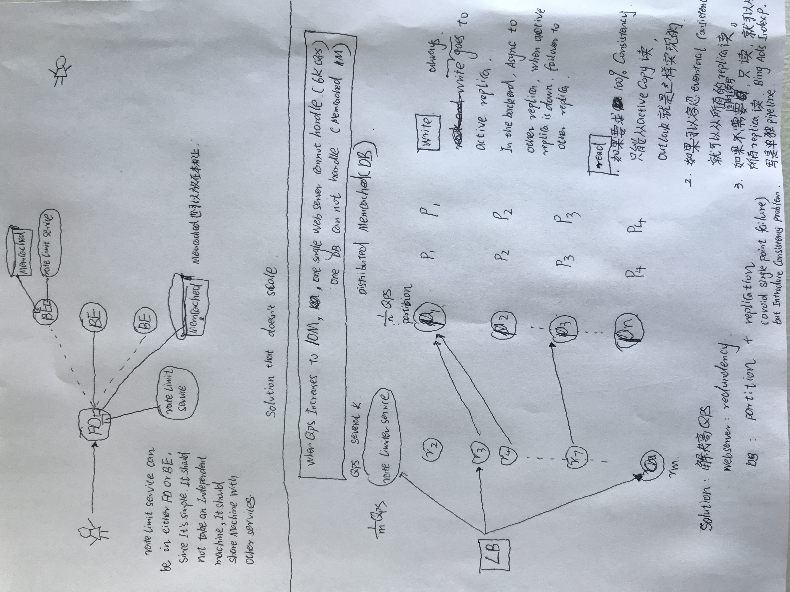

Designing an API Rate Limiter
1. Definition: In general, a rate limiter caps how many requests a sender can issue in a specific time window. It then blocks requests once the cap is reached.
2. Usage: control traffic, avoid robot machine abuse, security(password brutal force trial)
3. Requirement:
Functional: 1. limit number of requests in a time Windows 2. rate limit across multipe servers.
Nonfunctrional: 1. highly available, 2. low latency
4. Algo
Fixed window: User : {count, timestamp} maintain 1 for 1 user
Sliding window: User : HashSet maintain 1 for 1 user
5. Storage estimation
limit 500 requests per hour for 1M user
Fixed window: user : 8byte, count 4byte, time stamp 4 byte, Hashtable overhead 20 byte. (8 + 4 + 4 +20)* 1M = 36MB
sliding window: user : 8byte, time stamp 4 byte, 20 byte for hashset overhead, 20 byte for hash table overhead (8 + (4 + 20)*500 + 20)*1M = 12GB
Design from scratch 4/16/2020
Requirement: allow 3 requests within one minute.
Before looking at solution:
My naive thinking is to maintain a vector of class, where each class contains {userName, timeStamp}
{ {u1, t1}, {u2, t2}, { u3, t3} }
Algorithm: When one request comes
step 1: delete all entries earlier than t1-60.
step 2: check how many entries left within [t1-60, t1] time frame, if less than
3, add the new entry allow the request. if there is alreay 3 entries already,
delete all three entries for this user, then add [u1, t4] in and disallow the request.
drawback: you will need to add entries in and then remove entries out, which results in high latency
and more memory usage.
Solution I: Fixed window solution
每过60秒就重新计数
数据结构只维持一个entry, name-> {count, oldest Time}
class Node{
int count;
timestamp time;
}
data structure: HashMap<String, Node> m = new HashMap<>();
Algorithm:
If the ‘UserID’ is not present in the hash-table, insert it, set the ‘Count’ to 1, set ‘StartTime’ to the current time (normalized to a minute), and allow the request.
Otherwise, find the record of the ‘UserID’ and if CurrentTime – StartTime >= 1 min, set the ‘StartTime’ to the current time, ‘Count’ to 1, and allow the request.
If CurrentTime - StartTime <= 1 min and
If ‘Count < 3’, increment the Count and allow the request.
If ‘Count >= 3’, reject the request.
sudo code:
if (Name not find ){
m.put(name, new Node(1, curTimeStamp));
allow request
}else{
if ( curTimeStamp - m.get(name).time) > 1min{
m.get(name).count = 1;
m.get(name).time = curTimeStamp;
// allow request
}else{
if ( m.get(name).count < 3){
count++;
// allow request
}else{
// disallow request
}
}
}
drawback:
| ***| |*** |
t1 t2 t3 t4
t2-1 发三个， t3+1发三个
[t1, t2] 60s间只有3个，合理
[t3, t4] 60s间只有3个 合理
但是很明显 [t2-1, t3-1]间没有60s,但是有6个request,违反了1分钟内只能发三个的规定
Storage：
userName: 8 byte
count： 2 byte： 2^16 = 65k, meet the needs
TimeStamp: 4 bytes
* hashtable overhead per record: 20 bytes
* lock per record to avoid racecondition: 4byte
8 + 2 +4 + 20 + 4 = 38 bytes
say you have 1m user, total memory is = 38MB. where one server can satisfy.
We need to put it in high performance cache DB such a memcached or casandra
